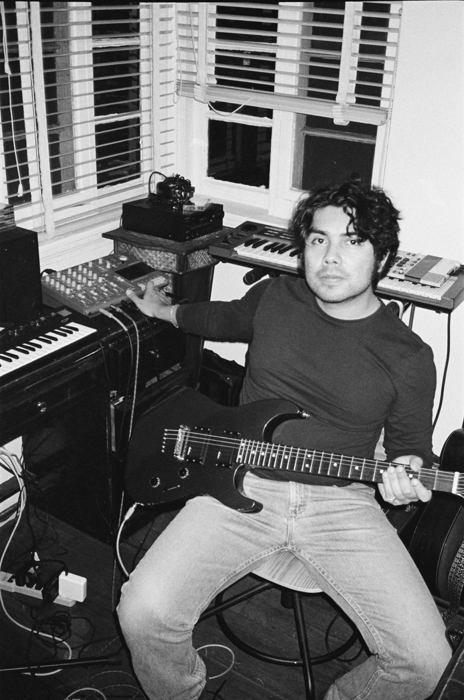

About

My name is William Menjivar. I'm a radio producer, talent booker, and storyteller who has spent my career working at the intersection of news, music, and media. I've produced live public radio, booked guests ranging from elected officials to award-winning filmmakers, toured the country as a musician, and I'm now pursuing a graduate degree in data analysis.
I'm currently a producer at Houston Public Media, home of News 88.7 FM, Houston's local NPR station, where I'm on the production team for the station's midday news talk show. Before that, I produced the station's morning news show, and I got my start there as a newsroom intern. In my current role, I book newsmakers, from elected officials to academics and community advocates, and I produce content for radio, web, and social media.
I graduated from the University of Texas at Austin in 2016 with a degree in Radio-Television-Film from the Moody College of Communication. After graduating, I moved to New York City to work for CBS News Sunday Morning, first as an intern and then as a news associate. I'm now pursuing a Master's in Social Research and Data Analysis at Montclair State University.
Music
Music has always been a big part of my life. I was the guitarist and co-manager of Narrow Head, a band on Run For Cover Records, and over the years we went from small local shows to touring the country and playing Coachella in 2024.
Cartoons
I've also loved cartoons for as long as I can remember. I grew up reading Peanuts and Calvin and Hobbes, and I still draw and animate in my spare time. I've developed a few cartoon series ideas of my own, including one about a beaver that works in an office as an engineer. You may have met him on the front page.
Along the way
I've held a range of jobs, each one tied to a different passion. I've worked as a gardener at the McGovern Centennial Gardens in Hermann Park, taught kindergarten in Houston ISD, and worked behind the counter at two of Texas's great record stores, Waterloo Records and Cactus Music.
I care deeply about education, local and state politics, world affairs, environmental equity, social justice, and human rights, and I'm just as passionate about sports, music, art, film, and literature. I hope to keep doing work that connects with all of them.